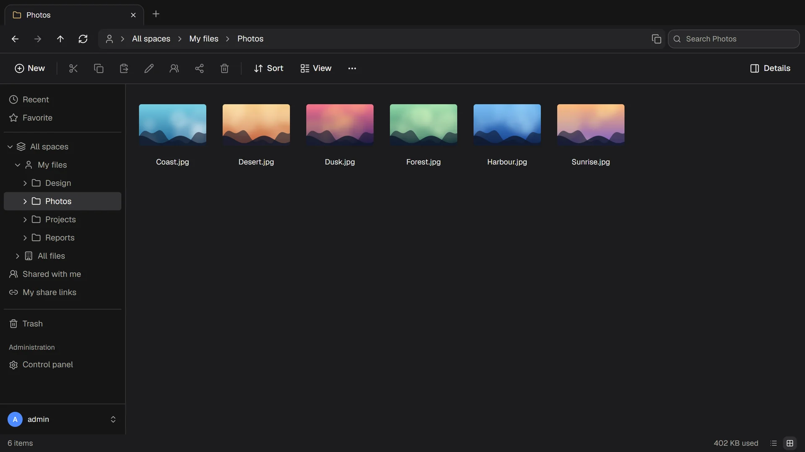

共享网盘该有的，这里都有
无需培训。会用资源管理器，就会用 ThirtyFile。
一上手就会用
标签页、地址栏、文件夹树、拖放、右键菜单，还有你早已熟悉的键盘快捷键。也可以在电脑或手机上把它映射为网络驱动器。
在浏览器中打开 Office 文件
无需安装任何软件，即可预览 Word、PowerPoint 和 Excel。Excel 工作簿和文本文件可以在线编辑，并保留历史版本。
通过链接分享
发送带有密码、有效期和下载次数限制的链接。可以把文件夹共享给同事，也可以让别人把文件发给你。
存储由你选择
本地磁盘或 NAS（文件仍是普通的文件夹）、兼容 S3 的存储、SFTP 或 FTP。已有的文件夹，例如 NAS 上的共享文件夹，也可以直接作为一个空间。
每个团队都有自己的空间
个人、全公司和团队空间，提供查看者、编辑者和管理者等角色，每个空间都可以设置容量上限。
用你习惯的方式登录
使用密码加两步验证，或使用 Microsoft、Google、GitHub 以及任何 OpenID Connect 服务的账号登录。每次登录和文件操作都有记录。
不离开浏览器就能编辑表格
打开 Excel 工作簿，改好需要的地方后保存。文件仍是普通的 Excel 文件，在哪里都能打开。
- 公式、数字格式、颜色和边框
- 可与 Excel 相互复制粘贴
- 图表、图片和文件中的其他内容都原样保留

分享多少，由你决定
链接可以要求输入密码、一周后失效，或限制下载次数。
- 创建链接的人失去访问权限后，链接也随之失效
- 可以查看谁在什么时候打开了链接
- 接收者无需账号

白天黑夜、电脑手机，都好用
浅色和深色模式、适配手机的布局，每个人都可以选择英文或繁体中文界面。
- 照片有缩略图，视频、音频和 PDF 有查看器
- 网络中断后，上传会从中断处继续
- 每个页面都可以换上你自己的名称、标志和颜色

一分钟即可开始使用
只有一个小程序，无需另外搭建数据库或 Web 服务器。
- 安装 Docker装在要存放文件的电脑或服务器上。
- 运行命令并把密码换成你自己的。
- 打开网页访问
http://localhost:8080，以admin登录。
docker run -d --name thirtyfile --restart unless-stopped \
-p 8080:8080 \
-v /srv/thirtyfile/data:/data \
-v /srv/thirtyfile/storage:/storage \
-e THIRTYFILE_ADMIN_PASSWORD='choose-a-password' \
ghcr.io/thirtyfile/thirtyfile:latestcurl -fLO https://github.com/ThirtyFile/ThirtyFile/releases/latest/download/compose.yaml
docker compose up -d下一步：设置用户、存储位置和你的标志。